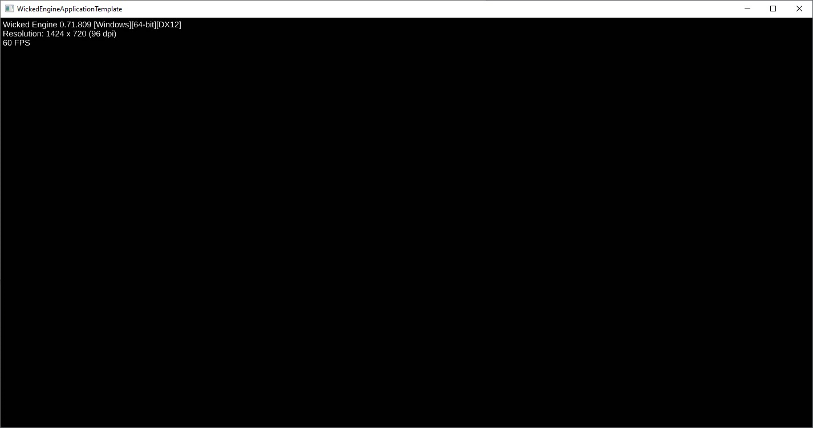
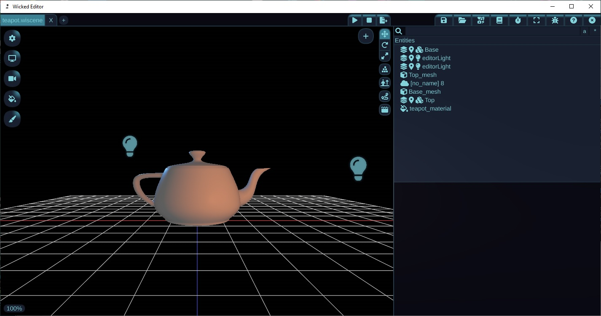
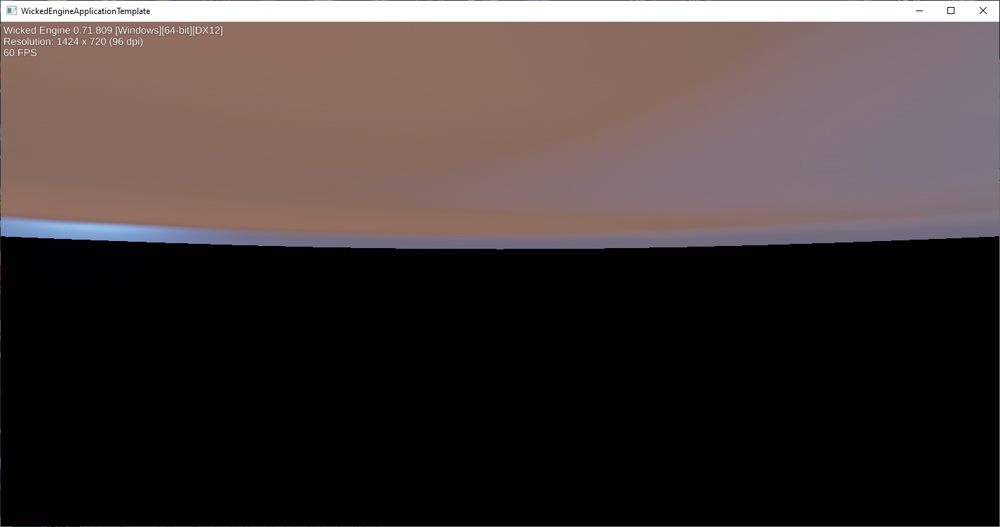
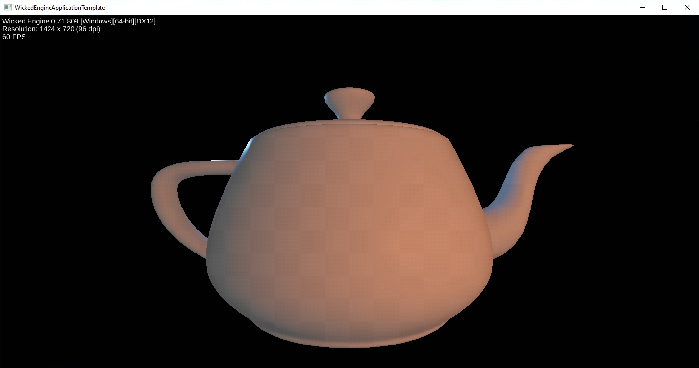
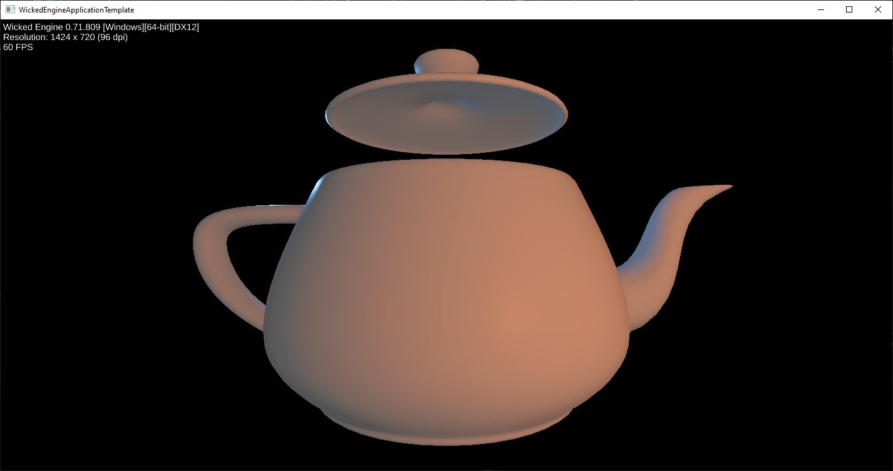

Getting Started
Clone and Build
After you have cloned the repo, you will want to create a release build of the engine library and the Editor. The engine is entirely self contained and does not have any external dependancies; its build process is painless. Once complete, navigate to BUILD\x64\Release\Editor_Windows and it will be named Editor_Windows.exe. I like to create a shortcut to this on my desktop.
The Visual Studio solution will contain a Samples folder and a project Template_Windows. This will be the starting point for your game or app, so if it isn't set already, right click on the template in the solution explorer and set it as your startup project.
Project Prep
The Windows template ships with only a single file: main.cpp. This file contains an implementation of a Windows main function with all the necessary boilerplate and message handling loop for a Windows application to function, and to provide a bridge for Wicked Engine to work as an application. The important takeaway here is that effort was made in this file to separate what your game logic does with Wicked from how your operating system facilitates it.
Should you build and run this project now, you'll be greeted with a windowed black screen. It will compile some shaders, show some version information and other statistics, but in a few moments it will ultimately settle down to a steady 60fps stream of endless nothing.
Lets change that!

Despite how scary most of the code in that file might look, this project is conveniently written such that only a minor change near the beginning is really needed for us to start doing our own thing. At the top you will see the following:
#include "WickedEngine.h"
wi::Application application;
As we've seen, Wicked intentionally does the bare minimum by default in its current state. What we need to do is derive our own wi::Application class and derive another class for something called a renderpath, specifically wi::RenderPath3D. Let's come back to this file a bit later.
game.h
Create a header file called game.h and give it the following:
#include "WickedEngine.h"
class GameRenderPath : public wi::RenderPath3D {
public:
void Load() override;
void Update(float dt) override;
};
class GameApp : public wi::Application{
public:
GameRenderPath renderer;
void Initialize() override;
};
As you can tell, we are gearing up for a 3D application where we will need to override the methods Initialize(), Load() and Update(). If you inspect the engine headers you will find others, but for now we can just focus on these.
app_init.cpp
In an effort to try keep things simple, minimal and managible for the purposes of the content on this site, I would like to separate our application methods from those belonging to our renderpath. This is because the content in Initialize() will change less frequently than what will be found in Load() and Update()
Let's create a source file named app_init.cpp and give it the following:
Initialize()
#include "game.h"
void GameApp::Initialize() {
wi::Application::Initialize();
renderer.init(canvas);
renderer.Load();
ActivatePath(&renderer);
}
Without going into details (because I don't pretend to know them!) this method is used to introduce the renderpath to our application's canvas, presumably to give the renderer something to draw upon. These pleasantries continue with the base application class method ActivatePath() being provided with our derived GameRenderPath class object named renderer.
game.cpp
Now let's create the star of the show, game.cpp. This will contain the following two methods:
Load()
#include "game.h"
void GameRenderPath::Load() {
// Content is loaded here!
RenderPath3D::Load();
}
There isn't much in this method just yet, but for right now paste it like this and we will return to it soon.
Update()
void GameRenderPath::Update(float dt) {
// Do something every frame!
RenderPath3D::Update(dt);
}
Similar to above, the bare minimum is here. More to come later.
main.cpp
Let's double back to main.cpp. Remember how it created the application object from wi::Application? We now have our own derived class, so now we include our game.h header and switch out the class:
#include "WickedEngine.h"
#include "game.h"
GameApp application;
Checkpoint
Sanity Check
If all goes well (and you might have already guessed) we should be enjoying another visit from our old friend, the empty black screen. I promised to change that, however this is an important milestone: If you find yourself struggling at this point in the tutorial and have no idea what is going on, it might be best to do some intro courses on C++ using Visual Studio and then come back to tackle this. Otherwise, I can personally guarantee much hair pulling and shouting ancient nordic curses at your IDE.
Content
Now that we've refactored the standard issue Windows template a little bit, we can get to the fun stuff: adding content!
Inside your cloned repo, there will be a folder named Content/models which will have a number of goodies in various file formats. As far as 3D models go, you will likely recognize some .obj and .glb files contained therein, but there will be a brand new one: Wicked's own .wiscene file. Functionally, these are archived scenes containing models, materials, animations, sounds and any other content that Wicked Engine can immediately use.
Now would be a good time to fire up the Wicked Editor you freshly compiled and take a peek inside some of this content.
The Editor is very nicely documented so I won't spend much time describing how it works. However, I think you will find it is fairly intuitive, and inspecting the files in the models folder is as easy as dragging and dropping them right in.
When you're done poking around, either restart the editor, or clear the current scene by clicking the 'x' on the tab in the upper left. Let's have a look at teapot.wiscene and inspect its contents. On the right hand side in the Entities panel, you will see all of the entities that make up this scene and some icons for their attached components. All of the components and data is stored below.
I would like to bring your attention to two in particular, one named "Base" and the other named "Top". They are so named because they have a name component, and you will see they have several other associated components enabling you to do interesting things with them.

LoadModel()
Let's bring this scene into our in-game world and try a few things out by using LoadModel(). Navigate back to your game.cpp source file and make the following changes:
#include "game.h"
using namespace wi::scene;
void GameRenderPath::Load() {
// Content is loaded here!
LoadModel("../../Content/models/teapot.wiscene");
RenderPath3D::Load();
}
void GameRenderPath::Update(float dt) {
// Do something every frame!
RenderPath3D::Update(dt);
}
Compile and run and we should now see something like this:

At first glance is a bit unclear what is going on, but what we are viewing is the bottom of the teapot. The default position of the camera is at the world origin, which just so happens to be where the teapot model is roughly positioned.
Camera
To get a better view, let's move the camera back a little bit and up slightly. Modify the Load() function as shown:
void GameRenderPath::Load() {
LoadModel("../../Content/models/teapot.wiscene");
// Create a transform to reposition the camera
TransformComponent transform;
transform.Translate(XMFLOAT3(0.0f, 1.0f, -4.0f));
GetCamera().TransformCamera(transform);
RenderPath3D::Load();
}

Moving Things
Recall when we used the Editor to view the teapot scene we identified the two objects for the top and base of the teapot? Lets try moving the top by first finding it by its name, and then working with its TransformComponent. Consider the following changes to the Load() method:
1 2 3 4 5 6 7 8 9 10 11 12 13 14 15 16 17 18 19 | |
Check your returns!
Keep in mind that absolutely no error checking is being carried out. If the entity cannot be found by name, you will end up with wi::ecs::INVALID_ENTITY which is zero. If the entity is invalid or does not have a component you are attempting to get, you will receive a null pointer.
The additional wi::ecs namespace has been added for the Entity type, which is simply a 64-bit unsigned number.
On line 14 we get the global scene to find our entity by name with Entity_FindByName(). Next, we fetch the TransformComponent pointer specific to the Entity we were given. Finally, we call the Translate() method on that object to slightly move the the lid up on the Y axis.

Finally, let's add some code to slowly move the lid upward a little bit every frame. Make the following changes to GameApp::Update():
void GameRenderPath::Update(float dt) {
Entity ent_teapot_top = GetScene().Entity_FindByName("Top");
TransformComponent* trans_teapot = GetScene().transforms.GetComponent(ent_teapot_top);
trans_teapot->Translate(Vector3(0.0f, 0.01f, 0.0f));
RenderPath3D::Update(dt);
}
Congrats!
You've taken your first steps into making some content using Wicked Engine! If you have any comments on this tutorial or have some suggestions for future tutorials, please head over to #wiki-and-documentation on the Wicked Discord server.